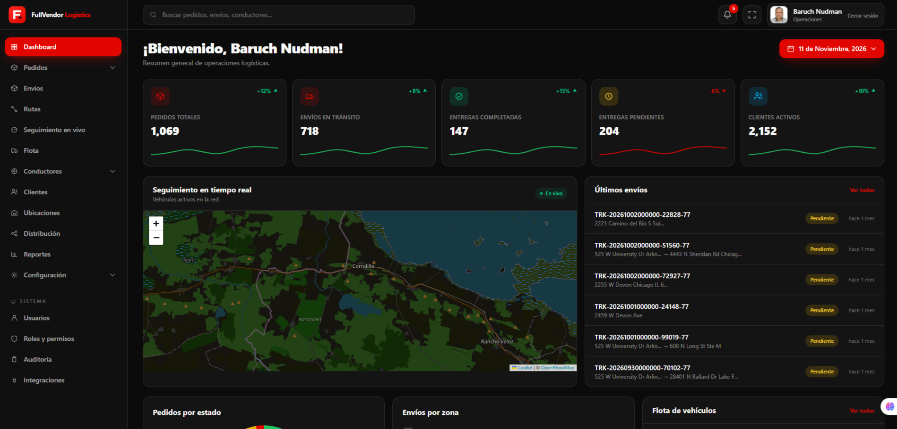
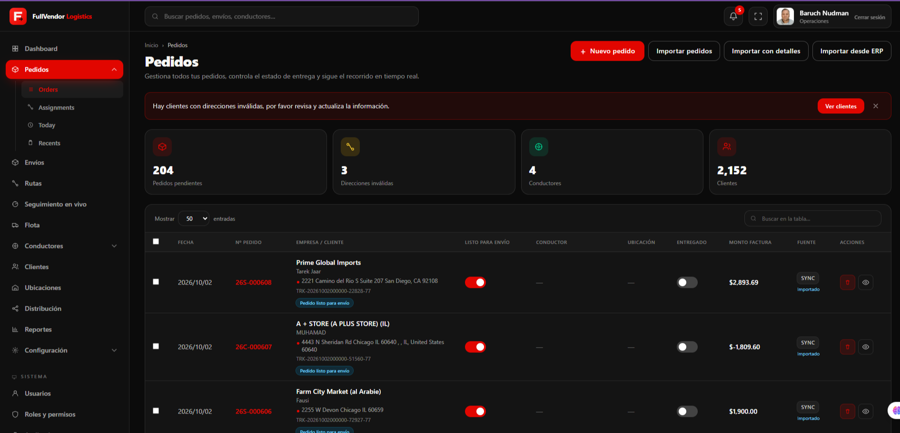
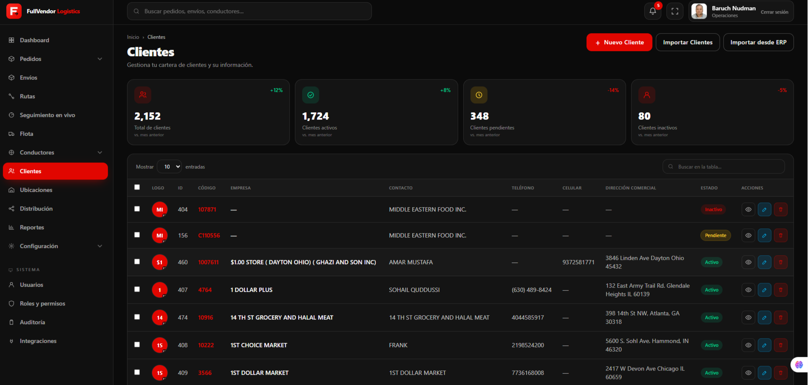

▦
Gestión de pedidos
Registra, importa, organiza y consulta pedidos desde un panel central. Controla estados, prioridades y preparación para despacho.
Centraliza pedidos, envíos, rutas, conductores, clientes y flota en una sola plataforma. FullVendor Logistics te ofrece visibilidad en tiempo real y herramientas para tomar decisiones más rápidas, reducir incidencias y entregar mejor.

Obtén una visión clara del rendimiento de tu operación. Supervisa indicadores, identifica pendientes y mantén coordinados a los equipos que hacen posible cada entrega.
Una solución diseñada para simplificar el trabajo diario, mejorar la coordinación y ofrecer información útil a cada responsable.
Registra, importa, organiza y consulta pedidos desde un panel central. Controla estados, prioridades y preparación para despacho.
Administra el ciclo de cada envío, consulta su estado y conserva la trazabilidad desde el origen hasta el destino.
Visualiza ubicaciones y recorridos en el mapa para facilitar la supervisión y responder oportunamente ante incidencias.
Mantén organizada la información de los vehículos y consulta la disponibilidad de los recursos de transporte.
Administra conductores, distribuye responsabilidades y relaciona cada asignación con las operaciones correspondientes.
Centraliza datos de contacto y direcciones. Detecta información pendiente de validar para mantener una operación confiable.
Una interfaz moderna que reúne los datos esenciales y facilita el seguimiento de tus procesos logísticos.
Consulta indicadores clave de pedidos, envíos en tránsito, entregas completadas y pendientes. El mapa de seguimiento y la actividad reciente te ayudan a comprender qué está ocurriendo en tu operación.
Controla el estado de cada pedido, revisa los datos del cliente, valida direcciones y administra la preparación para envío. También facilita la incorporación de información mediante opciones de importación.

Consulta empresas, contactos, teléfonos, direcciones y estados desde una vista estructurada. Mantén la información accesible para los equipos que coordinan pedidos y entregas.

Conecta procesos, mejora la visibilidad de tus entregas y trabaja con una plataforma preparada para acompañar el crecimiento de tu negocio.
Conoce cómo centralizar la gestión logística y obtener una visión más completa de tus pedidos, envíos, clientes y recursos.